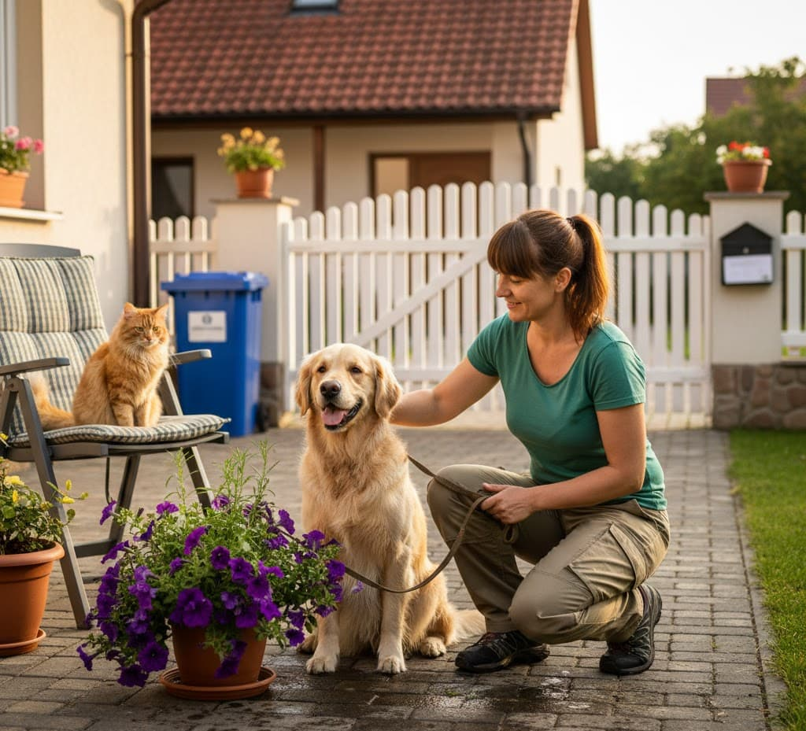
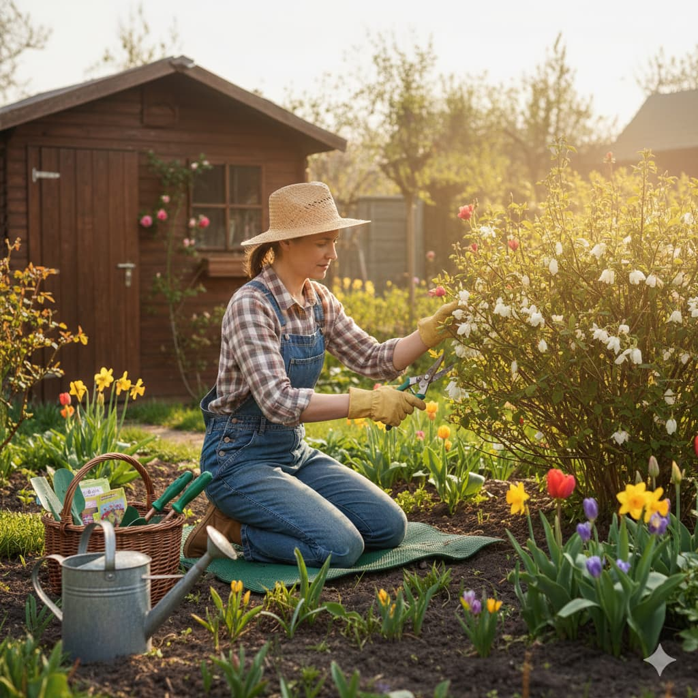

Máte své blízké na mělnickém hřbitově a nestíháte za nimi jezdit?
Bydlíte daleko nebo prostě nestíháte péči o hroby svých blízkých na Mělnicku? Nabízím vám pomocnou ruku při úklidu, sezónní výzdobě i zapálení svíčky.
Číst více →Tipy a rady pro péči o domácnost, zahradu a vaše mazlíčky.
Bydlíte daleko nebo prostě nestíháte péči o hroby svých blízkých na Mělnicku? Nabízím vám pomocnou ruku při úklidu, sezónní výzdobě i zapálení svíčky.
Číst více →
Chystáte se na zaslouženou dovolenou? Nechte starosti o dům a mazlíčky na mně
Číst více →Pomoc seniorům a dovoz nákupu Mělník
Číst více →
Jednoduchý průvodce jarní údržbou zahrady, který zvládne každý.
Číst více →